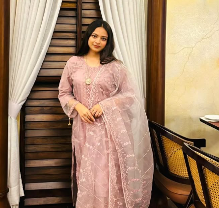

About Me
Hello! I am Kahruba, a student at International Islamic University Chittagong (IIUC). I am passionate about technology, programming, and learning new things. I enjoy exploring new concepts, improving my technical skills, and solving problems through logical thinking. I am particularly interested in Machine Learning and its applications in solving real-world problems. My goal is to strengthen my knowledge of computer science and develop practical skills through continuous learning and projects.
Education
University: International Islamic University Chittagong
Department: CSE
My Skills
- HTML
- CSS
- Bootstrap
- JavaScript